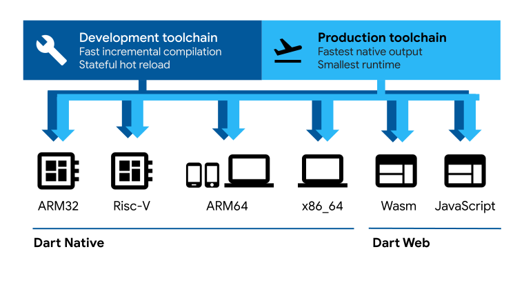

Dart overview

Dart is a client-optimized language for developing fast apps on any platform. Its goal is to offer the most productive programming language for multi-platform development, paired with a flexible execution runtime platform for app frameworks.
Languages are defined by their technical envelope—the choices made during development that shape the capabilities and strengths of a language. Dart is designed for a technical envelope that is particularly suited to client development, prioritizing both development (sub-second stateful hot reload) and high-quality production experiences across a wide variety of compilation targets (web, mobile, and desktop).
Dart also forms the foundation of Flutter. Dart provides the language and runtimes that power Flutter apps, but Dart also supports many core developer tasks like formatting, analyzing, and testing code.
Dart: The language
#The Dart language is type safe; it uses static type checking to ensure that a variable's value always matches the variable's static type. Sometimes, this is referred to as sound typing. Although types are mandatory, type annotations are optional because of type inference. The Dart typing system is also flexible, allowing the use of a dynamic type combined with runtime checks, which can be useful during experimentation or for code that needs to be especially dynamic.
Dart has built-in sound null safety. This means values can't be null unless you say they can be. With sound null safety, Dart can protect you from null exceptions at runtime through static code analysis. Unlike many other null-safe languages, when Dart determines that a variable is non-nullable, that variable can never be null. If you inspect your running code in the debugger, you see that non-nullability is retained at runtime; hence sound null safety.
The following code sample showcases several Dart language features, including libraries, async calls, nullable and non-nullable types, arrow syntax, generators, streams, and getters. To learn more about the language, check out the Dart language tour.
import 'dart:math' show Random;
void main() async {
print('Compute π using the Monte Carlo method.');
await for (final estimate in computePi().take(100)) {
print('π ≅ $estimate');
}
}
/// Generates a stream of increasingly accurate estimates of π.
Stream<double> computePi({int batch = 100000}) async* {
var total = 0; // Inferred to be of type int
var count = 0;
while (true) {
final points = generateRandom().take(batch);
final inside = points.where((p) => p.isInsideUnitCircle);
total += batch;
count += inside.length;
final ratio = count / total;
// Area of a circle is A = π⋅r², therefore π = A/r².
// So, when given random points with x ∈ <0,1>,
// y ∈ <0,1>, the ratio of those inside a unit circle
// should approach π / 4. Therefore, the value of π
// should be:
yield ratio * 4;
}
}
Iterable<Point> generateRandom([int? seed]) sync* {
final random = Random(seed);
while (true) {
yield Point(random.nextDouble(), random.nextDouble());
}
}
class Point {
final double x;
final double y;
const Point(this.x, this.y);
bool get isInsideUnitCircle => x * x + y * y <= 1;
}
Dart: The libraries
#Dart has a rich set of core libraries, providing essentials for many everyday programming tasks:
- Built-in types, collections, and other core functionality for every Dart program (
dart:core) - Richer collection types such as queues, linked lists, hashmaps, and binary trees (
dart:collection) - Encoders and decoders for converting between different data representations, including JSON and UTF-8 (
dart:convert) - Mathematical constants and functions, and random number generation (
dart:math) - Support for asynchronous programming, with classes such as
FutureandStream(dart:async) - Lists that efficiently handle fixed-sized data (for example, unsigned 8-byte integers) and SIMD numeric types (
dart:typed_data) - File, socket, HTTP, and other I/O support for non-web applications (
dart:io) - Foreign function interfaces for interoperability with other code that presents a C-style interface (
dart:ffi) - Concurrent programming using isolates—independent workers that are similar to threads but don't share memory, communicating only through messages (
dart:isolate) - HTML elements and other resources for web-based applications that need to interact with the browser and the Document Object Model (DOM) (
dart:html)
Beyond the core libraries, many APIs are provided through a comprehensive set of packages. The Dart team publishes many useful supplementary packages, such as these:
Additionally, third-party publishers and the broader community publish thousands of packages, with support for features like these:
To see a series of working examples featuring the Dart core libraries, read the core library documentation. To find additional APIs, check out the commonly used packages page.
Dart: The platforms
#Dart's compiler technology lets you run code in different ways:
Native platform: For apps targeting mobile and desktop devices, Dart includes both a Dart VM with just-in-time (JIT) compilation and an ahead-of-time (AOT) compiler for producing machine code.
Web platform: For apps targeting the web, Dart can compile for development or production purposes. Its web compilers translate Dart into JavaScript or WebAssembly.

The Flutter framework is a popular, multi-platform UI toolkit that's powered by the Dart platform, and that provides tooling and UI libraries to build UI experiences that run on iOS, Android, macOS, Windows, Linux, and the web.
Dart Native (machine code JIT and AOT)
#During development, a fast developer cycle is critical for iteration. The Dart VM offers a just-in-time compiler (JIT) with incremental recompilation (enabling hot reload), live metrics collections (powering DevTools), and rich debugging support.
When apps are ready to be deployed to production—whether you're publishing to an app store or deploying to a production backend—the Dart ahead-of-time (AOT) compiler can compile to native ARM or x64 machine code. Your AOT-compiled app launches with consistent, short startup time.
The AOT-compiled code runs inside an efficient Dart runtime that enforces the sound Dart type system and manages memory using fast object allocation and a generational garbage collector.
More information:
- Get started: Command-line and server apps
darttool for running with JIT or AOT compiling to machine code- Write command-line apps
- Write HTTP servers
Dart Web (JavaScript dev & prod and WebAssembly)
#Dart Web enables running Dart code on web platforms powered by JavaScript. With Dart Web, you compile Dart code to JavaScript code, which in turn runs in a browser—for example, V8 inside Chrome. Alternatively, Dart code can be compiled to WebAssembly.
Dart web contains three compilation modes:
- An incremental JavaScript development compiler enabling a fast developer cycle.
- An optimizing JavaScript production compiler which compiles Dart code to fast, compact, deployable JavaScript. These efficiencies come from techniques such as dead-code elimination.
- An optimizing WebAssembly (WasmGC) production compiler which compiles Dart code to super-fast, deployable WebAssembly GC code.
More information:
The Dart runtime
#Regardless of which platform you use or how you compile your code, executing the code requires a Dart runtime. This runtime is responsible for the following critical tasks:
Managing memory: Dart uses a managed memory model, where unused memory is reclaimed by a garbage collector (GC).
Enforcing the Dart type system: Although most type checks in Dart are static (compile-time), some type checks are dynamic (runtime). For example, the Dart runtime enforces dynamic checks by type check and cast operators.
Managing isolates: The Dart runtime controls the main isolate (where code normally runs) and any other isolates that the app creates.
On native platforms, the Dart runtime is automatically included inside self-contained executables, and is part of the Dart VM provided by the dart run command.
Learning Dart
#You have many choices for learning Dart. Here are a few that we recommend:
- Explore Dart in the browser through DartPad, a web-based execution environment for Dart code.
- Take a tour of the Dart language, which shows you how to use each major Dart feature.
- Complete a Dart tutorial that covers the basics of using Dart to build for the command line.
- Work through extensive online training from Dart experts.
- Explore the API documentation that describes the Dart core libraries.
- Read a book about Dart programming.
Unless stated otherwise, the documentation on this site reflects Dart 3.6.0. Page last updated on 2024-05-30. View source or report an issue.